Protocol
The Protocol interface uses the device Digital Pattern Generator and Logic Analyzer resources to transfer data using UART, SPI, I2C, CAN, CEC, SWD protocols, and to program AVR MCUs.
When the Logic Analyzer option is enabled, the Logic Analyzer can be used to investigate the signals. In this case, the Protocol instrument will not receive data, it will only send data.
Under the View menu the following can be adjusted:
- Max Lines: specifies the maximum number of lines to be displayed. This to prevent application slowdown.
- Stamp: selects the time, date-time or no stamp for Spy logs.
- Line Wrap: select to use line wrapping.
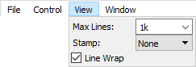
1. UART
The UART interface can be used to receive and to send data.
The Spy mode lets you decode the selected TX and RX lines.
The Send & Receive mode lets you send data over TX and receive from the selected RX line.
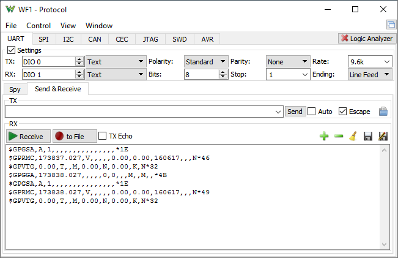
The UART settings contain the following:
- TX/RX: selects the digital signal used to transmit and to receive data.
- TXFormat: selects between text and number input format for TX entry filed.
- RXFormat: selects between text, binary, decimal and hexadecimal format for the RX log field.
- Polarity: selects between standard and inverted signal polarity.
- Bits: specifies the number of data bits in a transmission word.
- Parity: selects between Odd, Even, Mark (High), and Space (Low) parity modes.
- Stop: specify the stop length in bits.
- Rate: specifies the speed or bits per second.
- Ending: selects the line ending between nothing, carriage return, line feed, CR LF, LF CR, and Custom.
The custom ending accepts text with printable and escape characters \x## (hex digit) \\ \a \b \e \f \n \v \t \r \' \" \?
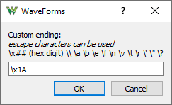
The TX field contains a text box to type the characters to send. With Auto option, the typed characters are immediately sent, or by pressing the Send button. The enter key will send entered text and the selected line ending. Checking the Escape option will accept escape characters. The Send File button will send the file content.
The RX field contains the enable button to receive data and the option to print the sent TX data as well. The received data is printed with black, the sent with green, and eventual errors with red. The unprintable characters codes are displayed between braces.
2. SPI
The SPI interface can be used to decode data transmission or as protocol master controller. It allows sending and receiving data in single, dual, and quad modes. The select signal is activated from software, therefore it does not have exact timing with the bit serialization. The larger transfers with more bits than the custom Patterns or Logic Analyzer device buffer are split to separate transfers.
On the Analog Discovery, the Patterns buffer size is 1k or 16k bits, and the Logic is 4k or 16k bits.
The SPI settings contain the following:
- Select: specifies the slave or chip select signal with low or high active level.
- Clock: specifies the clock signal.
- Polarity/Phase: selects the polarity and phase.
- Frequency: specifies the clock signal frequency.
- DQ#: specifies the data signals, DQ0-MOSI, DQ1-MISO, and DQ2/3 used in quad SPI mode.
- First bit: selects the bit transmission order, Most or Least Significant bit first.
- First word: selects the word transmission order, Most or Least Significant word first.
- Gear menu:
- Format: selects the data representation between: Binary, Decimal, Hexadecimal, and ASCII.
- Delay: specifies the delay between words. It is not used in dual and quad modes.
- Glitch filter: enables filter for reception, slave and master transfers to eliminate glitches on the clock signal. The specified frequency is used to filter glitches at 10%, like for 100kHz pulses shorter than 1us will be ignored.
- Initial DQ#: selects the initial drive of the data signals.
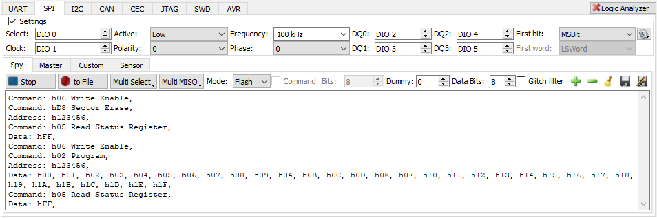
The Spy mode lets you decode SPI communication.
The Multi Select makes possible to interpret setups with multiple Chip Select signals, common Clock and Data. When enabled, it overrides the Select setting above.
The Multi MISO makes possible to interpret setups with multiple Data/MISO signals, common Select and Clock. It is supported in Three-wire (SISO) and Standard (MISO/MISO) modes. When enabled, it overrides DQ0 or DQ1.
The Mode option selects between Three-wire, Standard, Dual and Quad modes. The command option lets you specify the number of bits which are transmitted after select activation only over DQ0. The Data Bits specifies the number of bits in a data word.
The Command Bits is to interpret the first bits for the SPI transfer as command bits on DQ0/MOSI. The Dummy bits is to ignore the following bits. The Data Bits specifies the bit grouping to words.
The Flash mode interprets P5Q and M25P16 flash instruction codes with address and dual/quad data transfers.
The gear dropdown menu contains option to enable Timestamp.
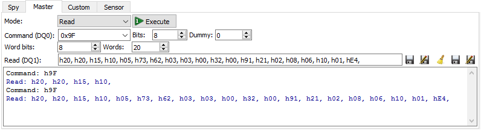
The Master mode lets you create simple transmissions and contains the following options:
- Mode: selects the transmission mode between Read Write to DQ0 from DQ1, Read from DQ1 MISO, Write to DQ0 MOSI, Read0 from DQ0 in 3-wire SPI mode, Dual/Quad Read/Write.
- Command: specifies the command word(s), which will be sent on DQ0 before the coming read or write operation.
- Bits: specifies the command word length.
- Dummy: specifies the number of following dummy bits.
- Word bits: specifies the word length.
- Words: shows the number of words for write or specifies for read transfer.
- Write: specifies the word(s) to send in binary, decimal, or hexadecimal format. The data can be imported from binary or text file using the Open button.
- Read: shows the read word(s). The data can be saved to binary or text file using the Save or Append buttons.
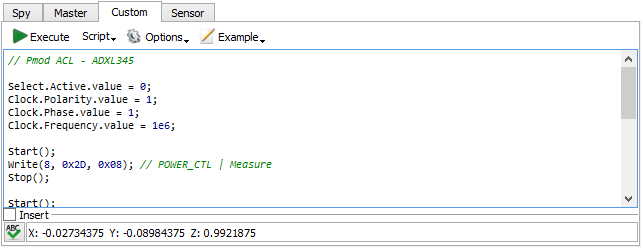
The Custom mode lets you write communication script with the following functions:
- Start(): Activates the select signal. Return true on success, otherwise returns false. If not called, the Select is activated automatically with hardware timing for each Read/Write transfer.
- Stop(): Deactivates the select signal. Return true on success, otherwise false.
- ReadWrite( bits per word , { word1, word2... | [word1, word2...] } ): 4-wire SPI data transfer. Returns the read array of words.
- Write( bits per word , { word1, word2... | [word1, word2...] } ): 3- or 4-wire SPI data write. Returns true on success, otherwise returns false.
- Read( bits per word , number of words to read): 4-wire SPI data read. Returns the read array of words from DQ1.
- Read0( bits per word , number of words to read): 3-wire SPI data read. Returns the read array of words from DQ0.
- WriteDual( bits per word , { word1, word2... | [word1, word2...] } ): Dual SPI data write to DQ0,1. Returns true on success, otherwise return false.
- ReadDual( bits per word , number of words to read ): Dual SPI data read from DQ0,1. Returns the read array of words.
- WriteQuad( bits per word , { word1, word2... | [word1, word2...] } ): Quad SPI data write to DQ0,1,2,3. Returns the read array of words.
- ReadQuad( bits per word , number of words to read ): Dual SPI data read from DQ0,1,2,3. Returns the read array of words.
- CmdReadWrite( bits per command , cmd , dummy bits , bits per word , { word1, word2... | [word1, word2...] } ): 4-wire SPI data transfer. Returns the read array of words.
- CmdWrite( bits per command , cmd , dummy bits , bits per word , { word1, word2... | [word1, word2...] } ): 3- or 4-wire SPI data write. Returns true on success, otherwise returns false.
- CmdRead( bits per command , cmd , dummy bits , bits per word , number of words to read): 4-wire SPI data read. Returns the read array of words from DQ1.
- CmdRead0( bits per command , cmd , dummy bits , bits per word , number of words to read): 3-wire SPI data read. Returns the read array of words from DQ0.
- CmdWriteDual( bits per command , cmd , dummy bits , bits per word , { word1, word2... | [word1, word2...] } ): Dual SPI data write to DQ0,1. Returns true on success, otherwise return false.
- CmdReadDual( bits per command , cmd , dummy bits , bits per word , number of words to read ): Dual SPI data read from DQ0,1. Returns the read array of words.
- CmdWriteQuad( bits per command , cmd , dummy bits , bits per word , { word1, word2... | [word1, word2...] } ): Quad SPI data write to DQ0,1,2,3. Returns the read array of words.
- CmdReadQuad( bits per command , cmd , dummy bits , bits per word , number of words to read ): Dual SPI data read from DQ0,1,2,3. Returns the read array of words.
- DQ#.Initial.text: Lets you specify the initial values.
- DIO.: Lets you set (the ones are not declared as SPI signal) and read the digital pins.
- DIO.Set(DIO index 0..31, value 0/1/-1) value of -1 disables output, turns to high impedance the respective DIO channel
- DIO.Get() returns array with DIO input values, array index corresponds to DIO index
- DIO.Clear() resets the earlier configured outputs, turns all to high impedance channels
- Besides these, you can access the SPI settings like Select, Clock, etc.
Under the examples menu, you can find scripts for some Pmods/ICs.
The SPI can also be controlled from the Script tool.
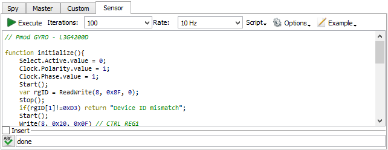
The Sensor mode lets you write communication script, which will be executed at precise timing with the following functions:
- initialize(): Function called at the beginning of script execution. It is useful to initialize the device and storage files.
- loop(): Function called for specified number of Iterations and at specified Rate. It is useful to collect, decode, and store sensor data. Use only static data transfer calls!
- finish(): Function called at the end of script execution. It is useful to send terminate commands to the device, summarize measurements, etc.
When the Sensor is executed, first the loop function is called to build the transmission bit sequence without performing it on the device. The bit sequence length is limited by the device Pattern or Logic buffer size. After the initialize function, the loop transmission sequence is performed for the given number of iterations, then the loop function is called to decode the received data, and finally the finish function is called.
3. I2C
The I2C interface can be used to decode data transmission or as protocol master controller. The transfer length is limited to the custom Patters or Logic Analyzer device buffer size. The read operations with sub-address use restart and transfer length is limited to less than half of the device buffer size. The write operations aren't stopped on not acknowledge, but the appropriate error is shown in the software.
The I2C settings contain the following:
- SCL: specifies the clock signal.
- SDA: specifies the data signal.
- Frequency: specifies the clock signal frequency.
- Clock Stretching: enables the support for I2C clock stretching
- Gear menu:
- Format: selects the data representation between Binary, Decimal, Hexadecimal, and ASCII.
- NAK last read byte: the I2C specifications require master NAK after last read byte, but some devices require ACK
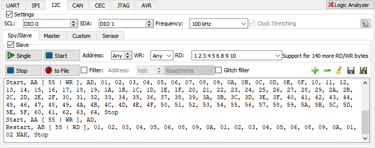
The Spy/Slave mode lets you decode I2C communication and to setup a slave I2C device.
The Slave group contains button to start a single or repeated I2C slave. The address filed expects 7bit value or to respond to any address. The WR specifies the number of write bytes acknowledge or unlimited number. Zero will NACK the address write, 1 after the first data byte... The RD field expects decimal, hexadecimal (0xAD or hAD), binary (b10101101) values separated by space, comma, dot, double dot or tab, and characters when the Format is set to ASCII.
The receiver can be started printing the decoder transactions in the text area or direct writing to file. The Filter option lets you specify the address and (read or write) operation which to log.
The Glitch filter enables frequency filter for reception to eliminate glitches on the signals. The specified frequency is used to filter glitches at 10%, like for 100kHz pulses shorter than 1us will be ignored.
The gear dropdown menu contains option to enable Timestamp.
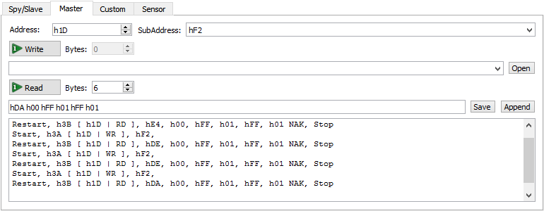
The Master mode lets you create simple transmissions and contains the following options:
- Address: specifies 7-bit I2C address.
- SubAddress: specifies I2C sub-address that will lead the write operations and it will be written before read operation with restart.
- Read / Bytes: executes the read operation for the specified number of bytes. The read data byte(s) are show in the row below and can be saved to binary or text file using the Save or Append buttons.
- Write / Bytes: executes the write operation of given bytes specified in the field below in binary, decimal, or hexadecimal format. The data can be imported from binary or text file using the Open button.
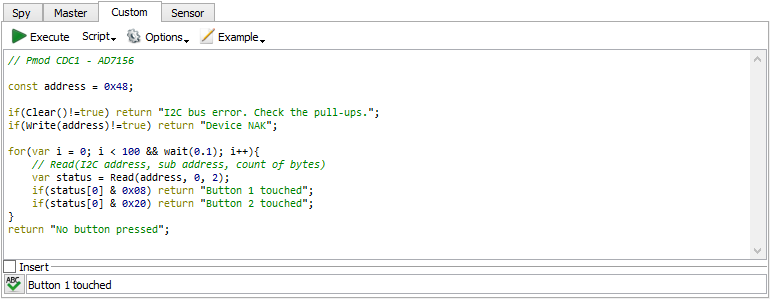
The Custom mode lets you write communication script with the following functions:
- Clear(): Returns true when the bus is free. It will try to resolve the SDA hold down issue.
- Read( address ): Returns true when acknowledged, otherwise false.
- Read( address, count of bytes ): Returns the read bytes array from the specified address.
- Read( address, [sub address byte1, byte2...], count of bytes ): Returns the read bytes array from the specified deice address and sub-address using repeated start.
- Write( address ): Returns true when acknowledged, otherwise false.
- Write( address, byte1, byte2...):
- Write( address, [byte1, byte2... ] } ): Returns zero on success, or -1 on address NotAcKnowled, or the NAK byte index.
- DIO.: Lets you set (the ones are not declared as SPI signal) and read the digital pins. See SPI DIO
- SlaveConfig(address, wr-bytes, [rd-byte1, rd-byte2,...], repeat): Starts automatic I2C slave with the following configuration:
- address: 7bit format and for any use -1
- wr-bytes: number of written bytes to ACK, 0 will NACK address write, negative will ACK unlimited bytes
- [rd-byte#]: one byte or array of bytes to return on read, negative value or empty array will NAK read
- repeat: true to respond multiple times, false for once, to stop after the first I2C stop.
- SlaveStart(address, wr-ack, rd-ack): Starts slave pausing for software processing after each word.
- SlaveStop():Stop started or configured slave.
- SlaveStatus() [0=id, 1=data, 2=ack] Returns and array with the following values:
- id: 0 nop, 1 write, 2 read, 3 data, others error
- data: 7bit address or byte
- ack: true for ACK and false for NACK.
- SlaveReceive(ack): Continue to receive and acknowledge or NACK.
- SlaveRespond(byte, ack): Respond with data and acknowledge or NACK.
- Receiver(): Start the I2C reception.
- Receive() [] : Returns an array with I2C transfers, numbers denoting: Positive values are at 9 bits which include address with read/write bit or data and acknowledge, [A6,...A0,RD|nWR,nACK|NACK] or [D7,...D0,nACK|NACK]. The -1 indicates start, -2 indicates restart, -3 indicates stop and other negative values indicates error.
- Besides these, you can access the I2C settings SCK, SDA, Frequency.
The I2C can also be controlled from the Script tool.
Under the examples menu, you can find scripts for some Pmods/ICs.
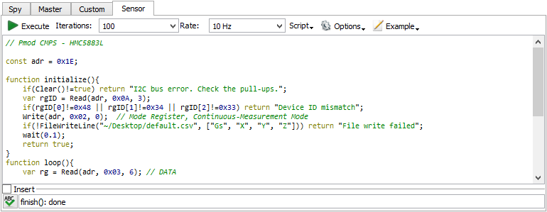
The Sensor mode lets you write communication script, which will be executed at precise timing with the following functions:
- initialize(): Function called at the beginning of script execution. It is useful to initialize the device and storage files.
- loop(): Function called for specified number of Iterations and at specified Rate. It is useful to collect, decode, and store sensor data. Use only static data transfer calls!
- finish(): Function called at the end of script execution. It is useful to send terminate commands to the device, summarize measurements, etc.
When the Sensor is executed, first the loop function is called to build the transmission bit sequence without performing it on the device. The bit sequence length is limited by the device Pattern or Logic buffer size. After the initialize function, the loop transmission sequence is performed for the given number of iterations, then the loop function is called to decode the received data, and finally the finish function is called.
4. CAN
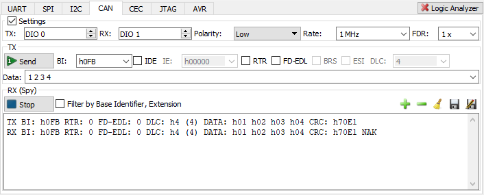
The CAN settings contain the following:
- TX/RX: selects the digital signal used to transmit and to receive data.
- Polarity: selects between low and high (inverted) signal polarity.
- Rate: specifies the bus frequency.
The TX filed contains the following:
- Execute: executes a TX frame with the configured options.
- BI: specifies the Base Identifier.
- IDE: selects Identifier Extension Flag.
- IE: specifies Identifier Extension.
- RTR: selects data frame or remote request frame.
- FD-EDL: selects Extended Data Length.
- BRS: selects Burst Rate Switch flag.
- ESI: selects Error State Indicator flag.
- DLC: specifies the number of data bytes for Remote transmission request, for data frame it is disabled.
- Sampling: adjusts the BRS length as nominal bit X sampling position + data bit length / 2.
- Data: specifies the data to send in binary, decimal, or hexadecimal format.
The RX field contains the enable button to receive data on the selected line. Higher Bit Rate Switch options are not supported by the RX. The data can be saved to text file using the Save or Append buttons.
5. CEC

The HDMI CEC settings contain the following:
- IO: selects the digital signal used to transmit and to receive data.
- Polarity: selects between low and high (inverted) signal polarity.
The TX filed contains the following:
- Send: sends a TX frame with the configured options.
- Src: specifies the source.
- Dst: specifies the destination.
- Opcode: specifies the opcode.
- Data: specifies the data to send in binary, decimal, or hexadecimal format.
The RX field contains the enable button to receive data on the selected line. The optional filtering can be selected for source, destination and opcode. The data can be saved to text file using the Save or Append buttons.
The TX Send start length is 4.5ms with 3.5ms low, the bit length is 2.5ms with 0.5ms low for bit 0 and 1.5ms for 1.
The RX Spy sampling is at 1.05ms after the falling edge and minimum 3ms low pulse for start.
The RX log displays the following:
- Src: Source in hexadecimal value.
- Dst: Destination in hexadecimal value.
- Op: Opcode in hexadecimal value.
- Data: Data bytes in hexadecimal value.
- EOM End of message bit if it is 1.
- NAK Not acknowledged if the acknowledge bit is 1.
- REJ Reject if the acknowledge bit is 0 for broadcast message.
6. JTAG
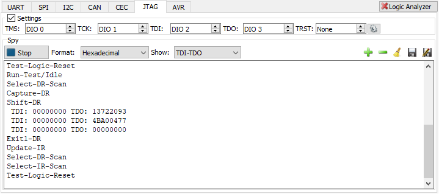
The JTAG settings contain the following:
TMS: the test mode select signal.
TCK: the test clock signal.
TDI: the test data in signal.
TDO: the test data out signal.
Gear menu:
IR First: the instruction register bit order between least and most signification bit first
IR Bits: the IR word size in number of bits.
DR First: the data register bit order between least and most signification bit first, and the word size in number of bits.
DR Bits: the DR word size in number of bits.
The Spy field contains the enable button to receive data on the selected line. The data format can be selected between: binary, decimal and hexadecimal. The show of TDI and/or TDO data can be selected. The data can be saved to text file using the Save or Append buttons.
The log displays the following TAP controller states: Test-Logic-Reset, Run-Test/Idle, Select-DR-Scan, Select-IR-Scan, Capture-DR, Capture-IR, Shift-DR, Shift-IR, Exit1-DR, Exit1-IR, Pause-DR, Pause-IR, Exit2-DR, Exit2-IR, Update-DR, Update-IR. The TDI/TDO data and the number of bits if this is not equal to the specified IR/DR Bits value.
7. SWD
The Serial Wire Debug settings contain the following:
SWDCK: the clock signal.
SWDIO: the data in signal.
Rate: specifies the speed or bits per second.
Gear menu:
Format: selects the data representation between Binary, Decimal, Hexadecimal.
Turn: specifies the turnaround cycles, default 1.
Trail: specifies the trailing cycles, default 0.
Resets: specifies the reset cycles, default 52.
Rst Trail: specifies the trailing cycles, default 16.
SWDIO Idle: idle level for IO, default Z.
Park Drive: when checked Park bit will be driven otherwise it will wait for pullup.
Glitch Filter: check to filter possible signal rining.
Continue on NAK: continue bit sequence interpretation even on not acknowledge.
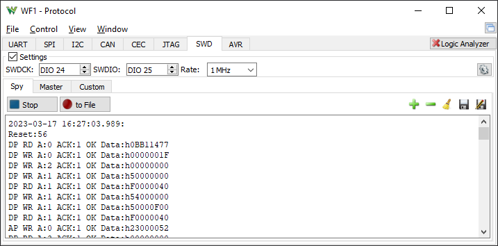
The Spy mode lets you decode SWD communication.
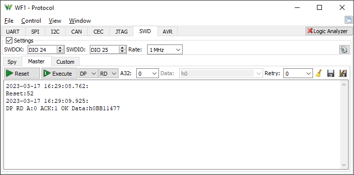
The Master mode lets you create simple transmissions and contains the following options:
- Reset: performs a reset.
- Execute: performs the following transfer.
- APnDP: selects between Access and Debug Port.
- RnW: selects between Read and Write operation.
- A32: specifies address bits 3:2.
- Data: specifies the data for write operation.
- Retry: specifies how many times to retry on WAIT.
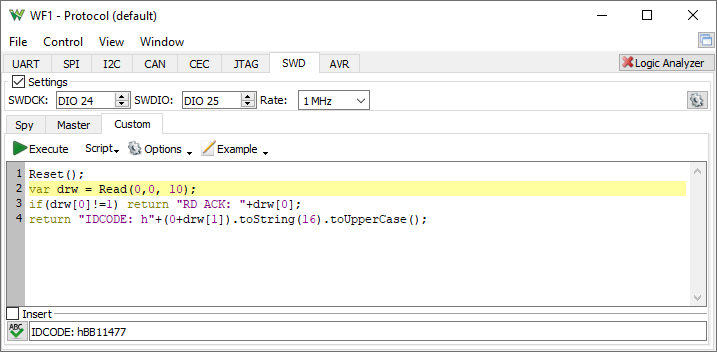
The Custom mode lets you write communication script with the following functions:
- Reset(count = default, trail = default): Reset command. Return true on success, otherwise returns false.
- Read( 1 AP or 0 DP, Adr3:2 0-1-2-3, retry = 0): Read command. Returns the array [acknowledge, data, 0 parity] or negative value on error.
- Write( 1 AP or 0 DP, Adr3:2, data, retry = 0} ): Write command. Returns acknowledge or negative value on error.
8. AVR
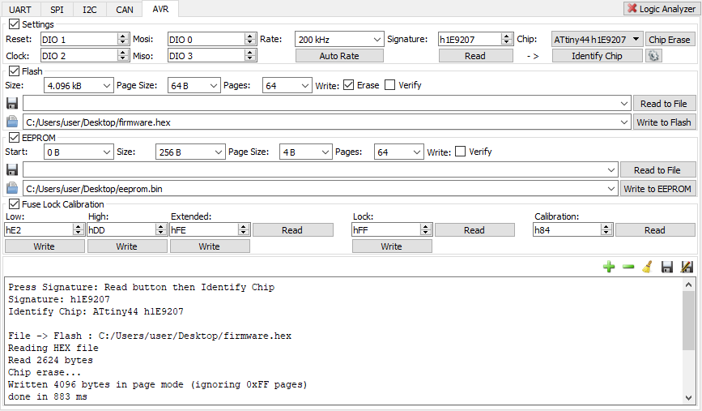
The AVR interface lets you program AVR MCUs.
In order to program and MCU specify the used DIO signals, press Auto Rate, Signature Read and Identify Chip. Select the firmware image you want to program and press Write to Flash.
- Reset: specifies the reset signal.
- Clock: specifies the SCL/clock signal.
- Mosi: specifies the MOSI signal.
- Miso: specifies the MISO signal.
- Rate: specifies the clock signal frequency.
- Auto Rate: identifies the maximum frequency at which it can enter programming mode.
- Signature: contains the signature ID of the device.
- Read: reads the signature of the device.
- Chip: selecting adjusts the Flash/EEPROM size and pages, the fuse, lock and calibration bit size.
- Identify Chip: selects the Chip based on the Signature.
- Chip Erase: performs chip erase operation Flash and EEPROM (depends on fuse setting).
- Gear menu:
- Fuse Low/High/Extended: enables the read/write on fuse bytes.
- Lock bits: enables the read/write on lock byte.
- Calib. Bytes: specifies the number of calibration bytes.
The Flash Size and Page Size are adjusted based on Chip selection, but it can be entered manually for unlisted MCUs. These are important for writing/programming. You can find option to perform Erase before write and Verify after programming. The supported file types for Flash read and write are Intel HEX format and binary files. The programming is performed in page access mode, when page size is larger than one. The file data pages containing only hFF bytes are skipped.
The EEPROM Size and Page Size are also adjusted on Chip selection. You can find option to Verify after programming. The EEPROM read and write operation supports binary files. The programming is performed in page access mode, when pages size is larger than one. The bytes wrapped due to start address and/or file size are programmed byte by byte.
The Fuse, Lock and Calibration bytes are enabled according the Chip selection or it can be selected under the Gear menu, under the Chip Erase button.